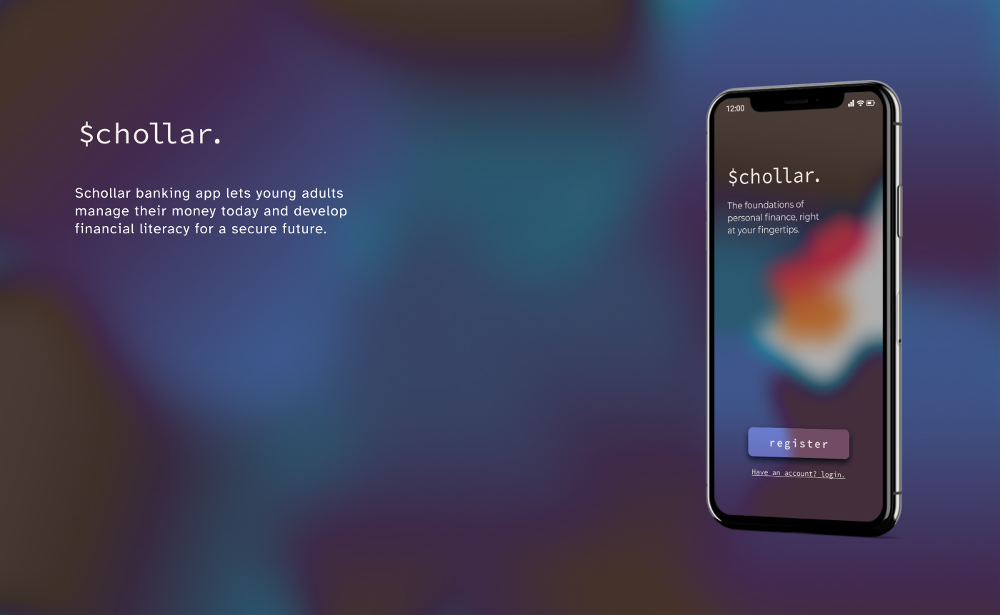
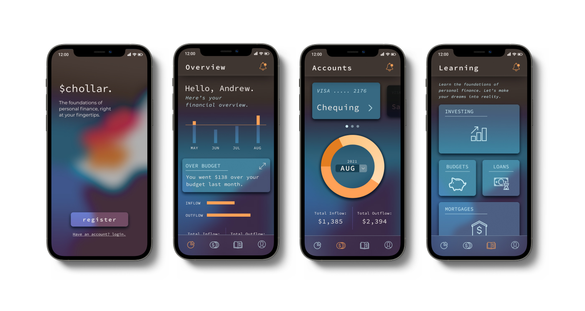
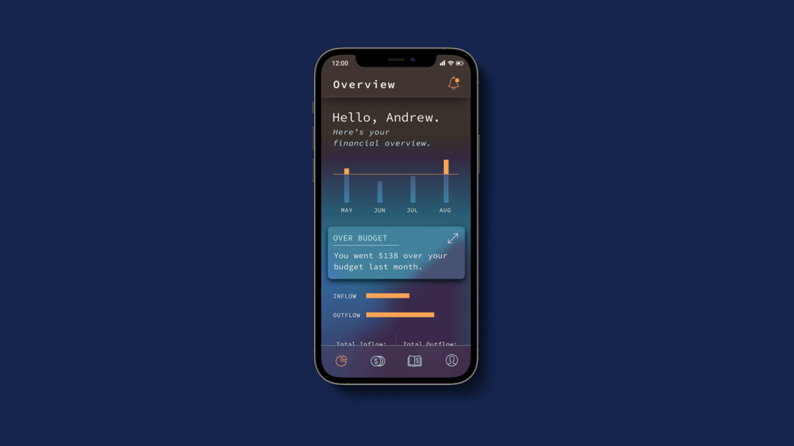
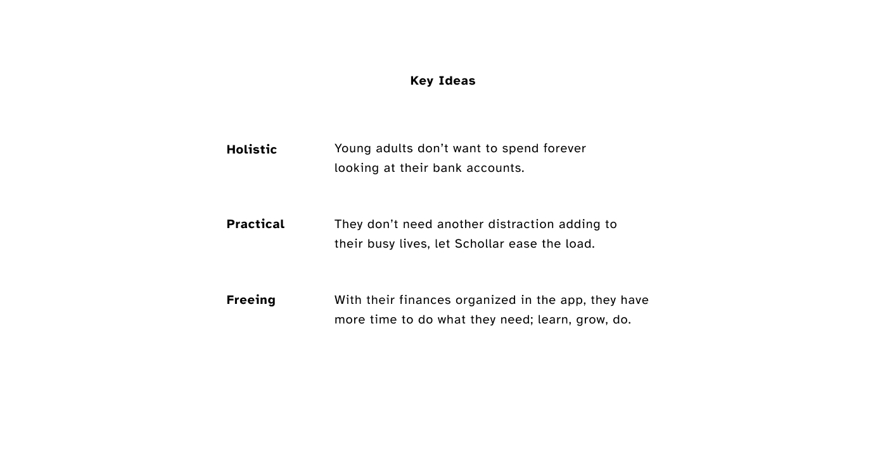
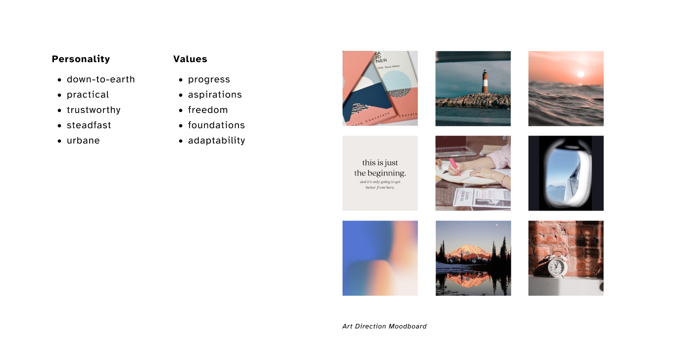

Schollar banking app lets young adults manage their money today and develop financial literacy for a secure future. We guide users through their transitionary period from teenager to adult, student to worker, dreamer to doer. See the full case study here.